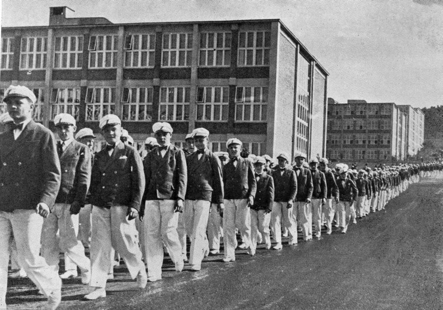

Historie
Text pro uvod do historie Batovy skoly prace.
1900
-
1918 - Růst Baťova závodu po 1. světové válce
Po skončení války zaznamenává firma Baťa obrovský růst a nábor mladých pracovníků. Tomáš Baťa si uvědomuje, že nestačí mít jen dělníky – potřebuje vychovat odpovědné a vzdělané spolupracovníky.
-
Založení Baťovy školy práce - 1925
Tomáš Baťa zakládá školu ve Zlíně, která propojuje odborné učení, práci ve firmě a osobní rozvoj. Mladí lidé se tu mají stát budoucími vedoucími i čestnými občany.
-
1927 - Zavedení internátního systému
Učňové jsou ubytováni v internátech s pevně daným denním režimem. Důraz se klade na pořádek, zdravý životní styl a odpovědnost.
-
Smrt Tomáše Bati - 1932
Tomáš Baťa umírá 12. července při letecké nehodě. Ve vedení firmy i školy ho nahrazuje Jan Antonín Baťa, který pokračuje v rozvoji jeho odkazu.
-
1935 - Rozšíření školy do zahraničí
Škola práce expanduje do zahraničí spolu s novými Baťovými závody. Absolventi pomáhají řídit pobočky například v Anglii, Indii nebo Kanadě.
-
Vliv 2. světové války - 1939
Během války je škola pod tlakem nacistického dozoru, ale vzdělávání se snaží pokračovat i v těžkých podmínkách.
-
1945 - Znárodnění Baťových závodů
Po válce dochází ke znárodnění. Státní vedení postupně oslabuje původní hodnoty a strukturu školy.
-
Zrušení Baťovy školy práce - 1948
Komunistický režim školu zruší jako buržoazní relikt. Přesto mnozí absolventi šíří Baťovy zásady dál – v podnikání i životě.